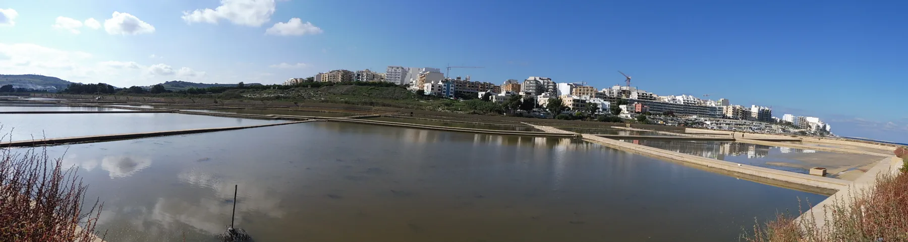

Several official records use Naxxar for this side. Each listing still needs its exact registered street and entrance checked.

SALINA · MALTASalt landscape.
Salt landscape.
Several edges.
Salina is a useful search name, not a shortcut to one municipal boundary. The exact address decides whether a home belongs to the Naxxar-side road, the St Paul's Bay side, or a neighbouring Qawra, Buġibba, Burmarrad or Baħar iċ-Ċagħaq context.
ONE SEARCH NAME, FOUR CONTEXTS
Start with the street, not the water.
The Address Registrar does not list Salina as a standalone locality row. Public services and licensed premises also cross the Naxxar and St Paul's Bay edges, so a broad label cannot establish a council, bay view, quiet road, short walk or parking condition.
The landscape is not a route across water, pans, fields or habitat. Access and wildlife conditions remain live checks.
Park Nazzjonali tas-Salina and St Paul's Bay-side addresses need their own access and service checks.
Qawra and Buġibba have separate editions. A shared viewport or marketing phrase does not merge their addresses into Salina.
EVERYDAY CHECKS
Three live sources before relying on a detail.
These public channels establish address, transport and health-service context. They do not freeze operating hours, eligibility, departures, disruptions or the route from an unknown home.
Confirm the registered locality
Salina is absent as a standalone Address Registrar locality row. Use the exact address record rather than inferring Naxxar or St Paul's Bay from a broad listing label.
Open the Address Registrar ↗Salini stops and live service
Malta Public Transport lists the paired Salini stops. Confirm the exact stop, direction, route, date and any diversion in the live operator tools.
Check routes and timetables ↗Mosta Health Centre catchment
The current catchment page groups Salina under Naxxar. Eligibility, clinic services, appointments and the real journey remain live checks.
Open the health-centre page ↗NATURE AND SALT HERITAGE
A protected landscape, not a backdrop promise.
Ambjent Malta and BirdLife Malta describe saline marsh, traditional salt pans and managed habitat. That supports a locality anchor, not guaranteed wildlife, unrestricted entry, bathing suitability or a view from any property.
Check access with the manager
Opening, visits and on-site conditions can change. Use BirdLife Malta's current reserve information before planning around access.
Observe the working structure
The pans form part of the site's heritage. Do not turn their walls into a pedestrian shortcut or imply that all areas are open.
Wildlife is never guaranteed
A protected reserve can support birdlife without promising a sighting, season, event or quiet outlook on a particular day.
ACTIVITIES WITH THEIR OWN ACCESS
Reserve, fortification and archaeology.
These official records establish heritage context, not today's opening, accessibility or distance from a property. Confirm current arrangements before setting out.
Reserve orientation
BirdLife Malta documents the managed reserve and visitor context. Use its current page for visits and site guidance.
Open the reserve page ↗Ximenes Redoubt
The cultural-heritage inventory records an eighteenth-century coastal fortification associated with salt storage.
Open inventory 1401 ↗Salini Catacombs
Heritage Malta documents the archaeological site in Naxxar and currently directs access through appointment arrangements.
Open Heritage Malta ↗FOOD WITHOUT A “BEST OF” CLAIM
Register anchors on different sides.
The Malta Tourism Authority's Salina text search returned records across Naxxar and San Pawl il-Baħar when checked. These three examples are non-ranked register anchors only; confirm current trading, menu, price, accessibility and opening directly.
Charles Inn Restaurant
A verifiable restaurant-register entry, not a quality claim or property-specific walking promise.
Ta' Cassia Salina Restaurant
The recorded address establishes one Naxxar-side context only. Check the current offer and operation directly.
Melita Salina Gardens
This San Pawl il-Baħar snack-bar record illustrates the opposite administrative edge; it is not near every Salina-labelled home.
Open the salt-pan and surrounding context only when useful.
The map is a broad OpenStreetMap view spanning the Naxxar-side edge, reserve and salt pans, Kennedy Grove side and Qawra approach. It deliberately marks no listing, council boundary, route, distance, journey time or guaranteed view and loads only after your click.
Address Registrar · Primary HealthCare · Ambjent Malta · BirdLife Malta · Heritage Malta · Ximenes Redoubt inventory · Malta Public Transport · MTA restaurant search · MTA snack-bar search. Volatile transport, access, health and operating details require a fresh check.
No ranking, fixed opening hour, property pin, boundary, guaranteed view, bay frontage, parking claim, accessibility promise, route, distance or journey time is implied.